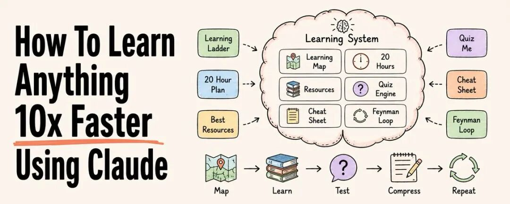
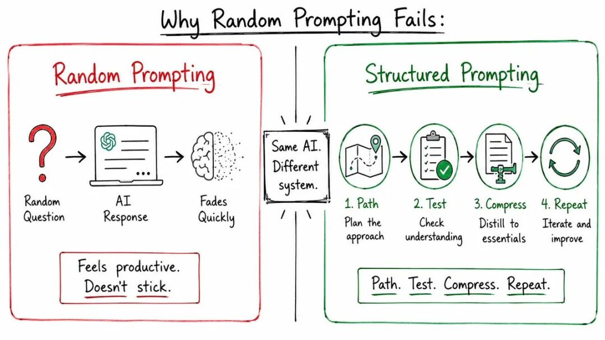
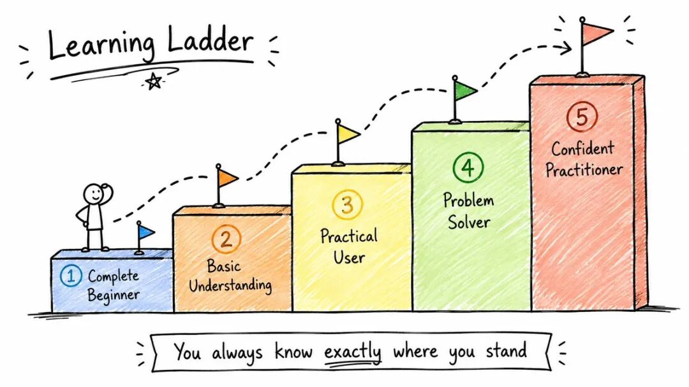
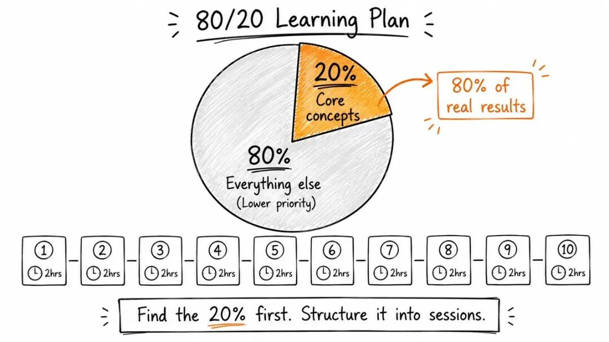
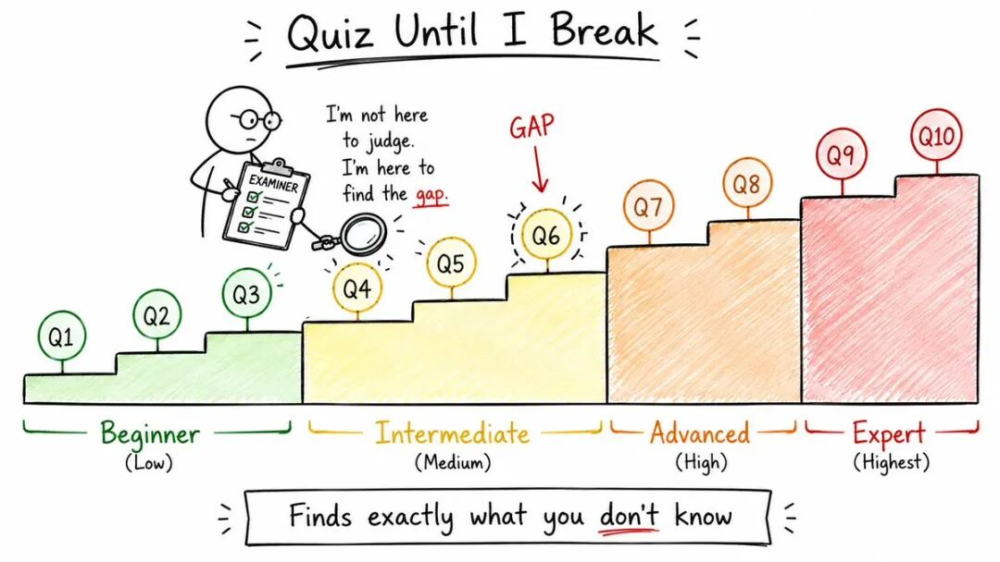
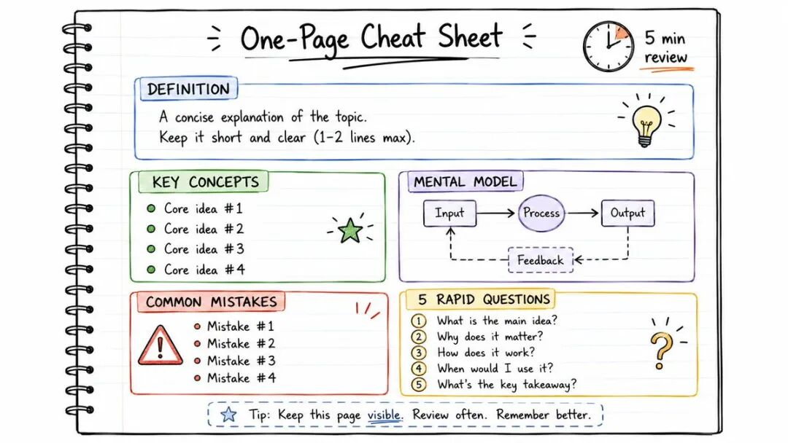
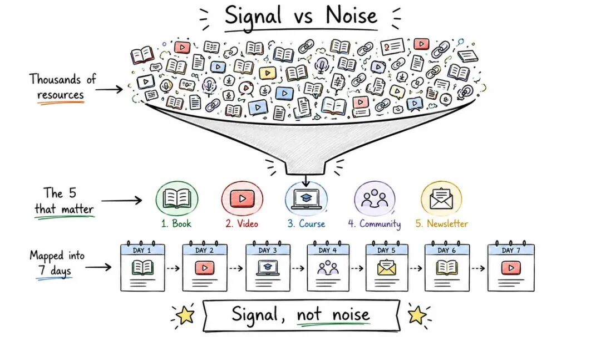
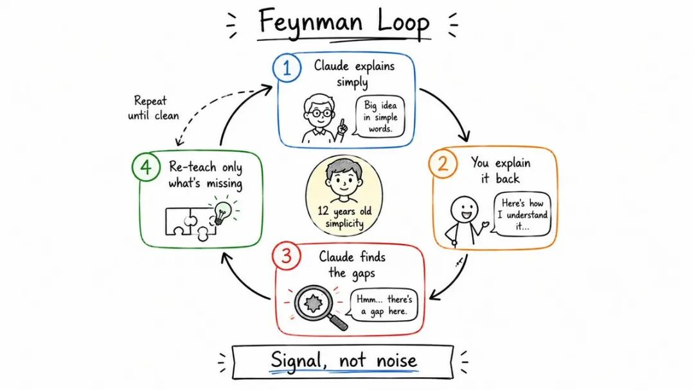
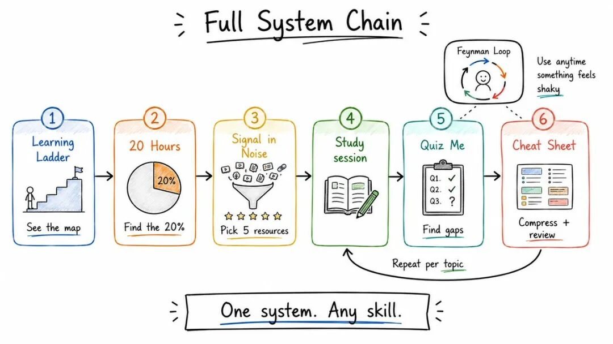

作者：Rahul (@sairahul1)
原文链接：https://x.com/sairahul1/status/2068250224532050089
导读
学习任何知识如今既简单又令人困惑。简单是因为 AI 能在几秒钟内解释几乎所有内容。困惑是因为大多数人只是随意提问，得到随机答案，感觉好像在学习，但一周后什么都记不住。问题不在于 AI，而在于你如何使用它。
本文将介绍 6 个提示词，让 Claude 变成你的私人教师、考官、资源管理器和学习伙伴。这些提示词并非为了获取答案，而是为了真正帮助你学习。保存这些提示词，你将为任何想要学习的技能派上用场。
为什么随意提问不起作用
你问 Claude“解释一下量子计算”，它会给出一个不错的答案，你会在 10 分钟内感到自己很聪明，但之后什么也记不住。这是因为缺乏结构、测试、重复和反馈循环。
真正的学习需要 4 个要素，而 AI 对话通常忽略了这些要素：
→ 一条路径 —— 让你知道该按什么顺序学习
→ 一次测试 —— 让你发现自己不知道什么
→ 一次压缩 —— 让你能在需要时快速复习
→ 一个反馈循环 —— 让差距被及时发现并解决
下面的每个提示词都会构建其中的一个要素。
1. 构建学习阶梯（清楚知道自己在哪里，下一步是什么）
大多数人学习失败是因为在基础不牢固的情况下就跳入了高级材料。这个提示词将任何主题分解为 5 个清晰的难度级别，从初学者到自信的实践者，每个级别都有里程碑和自我检查。
你总是能清楚地知道自己所处的位置。
我想一步一步地学习 [topic]，不跳过任何重要的基础。
扮演一位专家教师和技能教练。将 [topic] 分解为 5 个清晰的难度级别，从完全初学者到自信的实践者。
每个级别包括：
1. 级别名称
2. 在这个阶段我应该理解什么
3. 在这个级别上掌握知识是什么样的
4. 最重要的概念或技能，需要重点关注
5. 一个证明我准备好进入下一级别的里程碑
6. 一个动手练习或小型项目
7. 这个级别中学习者常犯的错误
8. 进入下一级别前的一个简单自我检查问题
按以下结构组织级别：
- 级别 1：完全初学者
- 级别 2：基本理解
- 级别 3：实际使用者
- 级别 4：问题解决者
- 级别 5：自信的实践者
保持解释实际、初学者友好，并专注于真正的进步。2. 用 20 小时学会任何知识（任何技能的 80/20 法则，结构化为 10 个 session）
大多数学科都有一小部分理念可以解锁其他所有内容。这个提示词首先找到那关键的 20%，然后将其转化为一个 10 个 session、每个 session 2 小时的学习计划，每个 session 都有练习、资源和复习问题。
我想用 20 个小时专注于学习 [topic]。
扮演一位专家教师和学习策略师。你的工作是帮助我先学习最有用的部分，而并非所有内容。
请执行以下操作：
1. 确定能给我带来 80% 实际世界结果的 20% 的概念、技能或原理。
2. 解释这些核心领域的重要性，以及它们如何与实际应用相关联。
3. 制定一个 10 个 session 的学习计划，每个 session 持续 2 小时。
4. 对于每个 session，包括：
- 主要学习目标
- 需要学习的关键概念
- 一个实际的练习或小型项目
- 一个推荐的资源，最好是免费的或适合初学者的
- 完成 session 后的预期结果
5. 在每个 session 结束时，给我 5 个复习问题来测试我的理解。
6. 在完整计划结束后，建议一个最终项目，证明我理解该主题足够在现实生活中使用它。
保持计划对初学者友好、实际，并专注于快速进步。3. 考到我崩溃（找出你不知道的精确边界）
被动阅读感觉很有效率，但主动回忆会揭示真相。这个提示词将 Claude 变成一位严格的考官，它会一次问一个问题，给每个答案打分，找出精确的知识差距，只重新解释你遗漏的部分，并随着你的进步增加难度。
我刚学习了 [topic]，想测试自己到底理解了多少。
扮演一位严格但乐于助人的考官。你的工作是通过主动回忆找出我理解的边界。
从问我 10 个问题开始，一次一个问题。
规则如下：
1. 让问题逐渐变难：
- 问题 1-3：初级水平
- 问题 4-6：中级水平
- 问题 7-8：高级水平
- 问题 9-10：专家水平
2. 一次只问一个问题，并等待我的答案。
3. 在每个答案之后，做四件事：
- 给我的答案打 0 到 10 的分数
- 告诉我哪里答对了
- 指出确切的差距、错误或薄弱点
- 用简单易懂的语言重新解释我遗漏的部分
4. 如果我的答案很薄弱，在进入下一个问题前问一个跟进问题。
5. 如果我回答得很好，稍微增加难度。
6. 在最后，给我：
- 最终得分
- 我最强的领域
- 我最弱的领域
- 一个简短的复习计划
- 5 个最终的挑战问题，帮助我掌握这个主题
不要一次性给我所有答案。让这感觉像一次真实的的学习面试。4. 制作一页速查表（你的大脑记得结构比段落更好）
这个提示词将任何主题压缩成一张你可以在 5 分钟内复习的单页，包括定义、规则、例子、常见错误和快速测试问题，全部以可扫描的项目符号形式呈现。
非常适合考试、会议、面试或任何你需要快速使用该主题的现实任务之前复习。
我想要一份关于 [topic] 的一页速查表。
扮演一位能将复杂理念简化为快速复习表的专家教师。
创建一份速查表，我可以在需要使用该主题之前用 5 分钟复习它。
请包括以下内容：
1. 用简单语言给出主题的简短定义。
2. 最重要的概念、规则、公式或步骤。
3. 使用清晰的项目符号，而并非长段落。
4. 如果有助于解释主题，包含一个简单的标记图、流程图、表格或思维模型。
5. 3-5 个 concrete 例子，展示该主题在现实生活中如何运作。
6. 我应该避免的常见错误或令人困惑的部分。
7. 一个快速的“使用前”检查清单。
8. 5 个快速测试记忆的问题。
保持它实用、视觉化、对初学者友好且易于扫描。5. 在噪声中找到信号（停止收集资源，开始使用正确的 5 个）







大多数学习者的问题并非资源太少，而是资源太多。他们花太多时间收集材料，却从不实际使用。这个提示词会分析你感兴趣的领域，并找出 最必要的 5 个资源，让你立即开始学习，而并非无限期地推迟。
I am overwhelmed with resources on [topic]. Help me find the absolute best 5 to use.
Act like a expert curator and time-saving mentor. Your job is not to give me more resources, but to help me use the right ones.
Please do the following:
1. Analyze [topic] and identify the 5 most essential resources that cover the core concepts, practical use, and real-world application.
2. For each resource, include:
- The name and a short description
- Why it’s better than other similar resources
- The best way to use it (e.g., read, watch, practice)
- A time estimate for how long it should take to complete
- One key takeaway I should get from it
3. Explain how these 5 resources fit together into a learning path.
4. Warn me about any traps or overrated resources I should avoid.
5. Give me a simple schedule to go through these 5 resources in the next week.
Keep the selection focused, practical, and designed to save me time.6. 使用费曼循环（如果你无法简单地解释它，那么你还没有理解它）
费曼技巧的核心理念是：如果你无法用简单的话向别人解释某事，那么你还没有真正理解它。这个提示词将 Claude 变成你的学习伙伴，它会引导你通过 4 个步骤掌握任何概念：
- 1. 学习：选择一个概念，尽可能深入地研究它。
- 2. 教授：假设你正在向一个完全不了解这个主题的孩子解释它。用简单的话写一篇 200 字的解释。
- 3. 回顾：找到你在步骤 2 中卡壳或解释不清楚的地方，返回去重新学习，直到你能流畅地解释它。
- 4. 简化：用更简单、更清晰的语言重写你的解释，去掉所有不必要的术语。
I want to master the concept of [topic] using the Feynman Technique.
Act like a patient learning partner. Help me explain [topic] in simple terms, like I’m teaching it to a 12-year-old.
Follow these steps:
1. **Learn**: I will study [topic] for 30 minutes. My goal is to understand it well enough to explain it simply.
2. **Teach**: After studying, I will write an explanation of [topic] in 200 words or less, as if I’m teaching it to a 12-year-old. You will review my explanation.
3. **Review**: If my explanation is unclear, incomplete, or uses complex terms, identify the gaps. Tell me to go back and re-study those specific parts.
4. **Simplify**: Once I can explain it clearly, help me simplify the explanation even more. Remove any unnecessary words or terms.
Your job is to make sure I can explain [topic] in the simplest way possible. If I can do that, I truly understand it.如何将这些提示词串联起来
- 1. 构建学习阶梯：首先使用“构建学习阶梯”提示词，了解你当前的水平以及下一步该学什么。
- 2. 20 小时学习计划：使用“20 小时学习”提示词，获取核心概念的学习计划。
- 3. 制作一页速查表：在学习过程中，定期使用“一页速查表”提示词，压缩你学到的知识。
- 4. 费曼循环：用“费曼循环”提示词检查你的理解，确保你能简单地解释每个关键概念。
- 5. 考到你崩溃：用“考到你崩溃”提示词测试你的知识边界，找出薄弱环节。
- 6. 资源筛选：如果感到资源过载，使用“在噪声中找到信号”提示词，专注于最重要的 5 个资源。
为什么这些方法实际上有效
这些方法有效，因为它们模拟了人类学习的自然方式，同时利用了 AI 的 strengths：
- 1. 结构化学习：学习阶梯和 20 小时计划提供了清晰的路径，避免了盲目学习。
- 2. 主动回忆：考到你崩溃提示词通过主动测试强化记忆。
- 3. 知识压缩：一页速查表帮助你在需要时快速复习。
- 4. 反馈循环：费曼循环和考到你崩溃提示词提供了即时反馈，帮助你填补知识 gaps。
- 5. 资源优化：在噪声中找到信号提示词确保你使用最相关的资源，避免浪费时间。
这些提示词将 Claude 变成了一个全面的学习系统，而不仅仅是一个答案提供者。通过这些方法，你可以 10 倍速地学习任何知识。
5. 找到噪声中的信号（停止收集资源，开始使用正确的 5 个）
有成千上万的资源可供选择，大多数人浪费时间收集资源，而并非学习。
这个提示会找到 5 个最高价值的资源——书籍、视频、课程、社区——对它们进行排名，并仅使用这 5 个资源构建一个 7 天的学习路径。
我想要快速学习 [topic]，但我不想在低质量的资源上浪费时间。
扮演一个专业的学习策划者。为学习 [topic] 找到 5 个最高价值的资源。
资源可以包括书籍、视频、课程、网站、时事通讯、社区或要关注的专家。
对每个资源，包括：
1. 资源名称
2. 资源类型
3. 它值得我花时间的原因
4. 它帮助我学习 [topic] 的具体部分
5. 最适合这种资源的学习者类型
6. 难度级别：初级、中级或高级
7. 我应该如何有效利用它
8. 一个警告，说明不要浪费时间在什么上面
列出资源后，按最佳使用顺序对它们进行排名。
然后，仅使用这些资源为我提供一个简单的 7 天学习路径。
重点关注质量、清晰度和实际实用性。我想要的是信号，而并非噪声。6. 使用费曼循环（如果你无法简单解释它，那么你还没有理解它）
费曼方法几乎可以瞬间揭示虚假的理解。
Claude 会像你 12 岁时一样解释这个主题，你用你自己的话复述，Claude 会找到每一个差距，只重新教授你遗漏的部分——循环重复，直到你的解释清晰准确。
我想要使用费曼学习法深入理解 [topic]。
扮演一个有耐心的老师。首先，用简单的语言向我解释 [topic]，就当我 12 岁。
使用：
- 简单的词汇
- 现实生活的例子
- 类比
- 没有不必要的术语
- 简短的解释
解释后，让我用我自己的话复述这个主题。
然后，审查我的解释，并执行以下操作：
1. 确定我解释正确的部分。
2. 找到每一个差距、错误、困惑或遗漏的想法。
3. 重新教授我做错或遗漏的部分。
4. 让我用更清晰的方式再次解释它。
5. 重复这个循环，直到我的解释简单、准确且完整。
规则：
- 在我的解释清晰之前，不要继续。
- 不要让我承受额外理论的负担。
- 温和但清晰地纠正我。
- 每当我困惑时，使用例子。
- 最后，给我一个 [topic] 的最终清晰解释，我可以保存为笔记。
让这感觉像是一场互动的学习对话，而并非讲座。如何将这些串联起来


这不仅仅是 6 个单独的技巧，而是一个学习系统的各个阶段。
→ 从学习阶梯开始，了解整个学习地图
→ 使用 20 小时找到值得首先关注的核心 20%
→ 每次学习后，运行“考到我崩溃”，找到真正的差距
→ 将所学内容压缩成一页速查表，方便快速复习
→ 在开始之前，使用“噪声中的信号”一次，选择你的 5 个资源
→ 对任何仍然感觉薄弱的内容运行费曼循环
路径 → 测试 → 压缩 → 重复。
这就是整个系统。